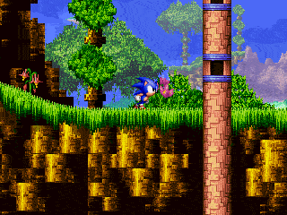
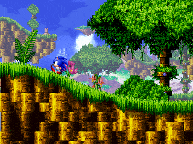

HOW TO PLAY
Sonic XG uses a relatively simple control scheme, as the difficulty comes from the challenges the terrain creates.
You will need to master the controls to overcome them efficiently!
BASICS
MOVEMENT: Move the character by pressing LEFT/RIGHT. By holding LEFT/RIGHT, you will slowly build up speed.
Upward slopes will require more effort to climb, while downward slopes will increase your speed.
ROLL: While moving, press DOWN to curl into a ball.
You will have less control when you're rolling; upward slopes are harder to climb, and downward slopes give you even more momentum than simply running.
JUMP: Press the ACTION button to jump.
In a jumpball state, much like the rolling state, you are able to smash through enemies as well as monitors containing power-ups!
AIR-CURL: Press the ACTION button whilst airborne and not in a ball to curl into it.
VIEW: Look up/down by pressing and holding UP/DOWN.
Camera pans after a few seconds of holding the input. Must be at a stand-still, used to activate SPECIAL MOVES.
NEW TECHNIQUE - CHAOS STATE

Chaos State is a unique ability that augments the character's movement in various ways. During Chaos State, the character becomes more agile and will have an faster accelleration and handling. You will need quick reflexes to keep yourself in Chaos State!Try experimenting what each character brings to the table!
CHAOS DASH: Run fast enough for a few seconds to break the sound barrier. You will be invulnerable during the initial burst!
 CHAOS DRIFT: Double tap the opposite direction when skidding during a Chaos Dash.
CHAOS DRIFT: Double tap the opposite direction when skidding during a Chaos Dash.
Useful for quickly evading oncoming attacks if you have quick reflexes but slows you down if used repeatedly!
SONIC THE HEDGEHOG
Sonic is the all-rounder of the trio, he's able to move around terrain with no additional strenghts or weaknesses.
STRIKE DASH: Hold UP and press the ACTION button to rev up speed in place.
When you release UP, Sonic will shoot forward.
SPINDASH: Hold DOWN and press the ACTION button multiple times to roll and rev up speed in place.
When you release DOWN, Sonic will shoot forward in roll state.
 INSTA-SHIELD: After a jump, press the ACTION button again to generate a shield around Sonic for a split second.
INSTA-SHIELD: After a jump, press the ACTION button again to generate a shield around Sonic for a split second.
This allows Sonic to attack enemies from further away as well as deflect projectiles and parry off of spikes!
 WALL KICK: When jumping towards a wall, press the ACTION button to start sliding down the wall. Press the ACTION button again to jump off the wall in the opposite direction.
WALL KICK: When jumping towards a wall, press the ACTION button to start sliding down the wall. Press the ACTION button again to jump off the wall in the opposite direction.
Chain multiple wall jumps together to access higher parts of levels!

WALL ROLL: During a Wall Slide, press DOWN to start rolling down the wall.Useful for getting sliding under circular ceilings.